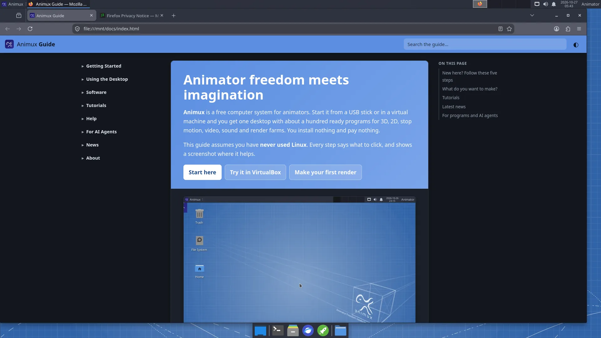

Animux uses the Xfce desktop. If you know Windows, most things work the same way: windows, a menu, double-click to open, right-click for more options.

The top panel#
| Where | What | How to use it |
|---|---|---|
| Top left: Animux | The menu with every program | Click it, then move the mouse over a category. See The Animux menu. |
| Next to it | Open windows | Click a window's name to bring it to the front or hide it. |
| Middle right | Workspaces (four small boxes) | Four separate desktops. Click one to switch; handy to keep Blender on one and the browser on another. |
| Right | Network, volume, notifications | Click the network icon for Wi-Fi, the speaker for volume. |
| Right | Date and time | Click for a calendar. |
| Far right: Animator | Your user name | Log out, restart, shut down, lock the screen. |
The dock (bottom)#
| Icon | What it does |
|---|---|
| Blue rectangle | Show desktop: hides all windows (click again to bring them back). |
Black box with >_ |
Terminal: type commands (how). |
| Grey filing drawer | File manager: your files and drives (how). |
| Blue globe | Web browser (Firefox). |
| Green rocket | Application finder: type a few letters of a program's name and press Enter. |
| Blue folder | Folder menu: shows the folders in your Home as a menu, so you can open one quickly. |
Desktop icons#
- Trash: deleted files go here first. Right-click → Empty Trash to delete them for good.
- File System: the whole system. You rarely need it.
- Home: your personal folder with Documents, Pictures, Videos and so on.
- USB sticks and disks appear here when you plug them in.
Starting programs: three ways#
- The menu: Animux → category → program.
- Search: press Alt+F2 or click the green rocket, type for example
blender, press Enter. - Double-click a file: a
.blendfile opens in Blender, a picture in the image viewer, a video in VLC.
Windows#
- Drag a window by its title bar. Double-click the title bar to make it fill the screen.
- The buttons at the top right of each window: minimise (_), maximise (□), close (×).
- Alt+Tab switches between windows.
- Drag a window to the left or right edge of the screen to give it half the screen.
Shutting down#
Click Animator at the top right (or Animux → Log Out) and choose Shut Down or Restart.
Live session
In the live session, files are lost when you shut down. See The live session.
This guide on Animux#
The guide is installed on Animux and works without internet: Animux → Animux Tools → Animux Guide. It also opens in the web browser at http://127.0.0.1:8765/, and it opens by itself the first time you log in.

